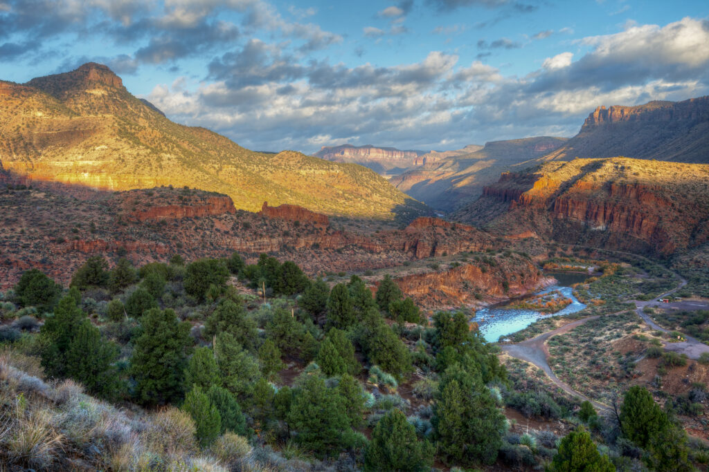

Hello, and welcome to my site! This section will be a short introduction about who I am.
My name is Nathan Chen, and I am a currently a student at Arizona State University who is studying Informatics. I created this website to share my experiences and recommendations with others who are interested in the extensive outdoor trail system in Arizona.
My hobbies include plenty of hiking, as well as several other outdoor activities such as camping, backpacking, and fishing. I am currently studying for a game development certificate as well as information technology and data based programming.
This website highlights trails, scenic locations, and outdoor spots worth exploring. Visitors can browse featured trails, contact me for information, and find helpful starting points for future hiking adventures.
If you are looking for great opportunities to hike the huge variety of trails in Arizona, recommendations on which locations to go to and their popular trails start here. I also will rate trails based on their enjoyment level, scenery, and difficulty.